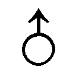

| 10分ラブ～Short Love Stories～ | |
| ＣｏｚＫｕｍａｇａｉ | |
| モバイルメディアリサーチ (2016) | |
girls pocket book
10分ラブ
～Short Love Stories～
Coz Kumagai
この本は横書きでレイアウトされています。
また、ご覧になる機種により、表示の差が認められることがあります。
【目次】
■ 第1 話 ファーストキス
■ 第2 話 夏休みの終わりに
■ 第3 話 好きかもしれない
■ 第4 話 あたたかい雪
■ 第5 話 ラジオ・ラブ
■ 第6 話 彼女との出会い方
■ 第7 話 運命の赤い線
■ 第8 話 初デート
■ 第9 話 エンジェル・ストラップ
■ 第10 話 ほっとする彼
■ 第11 話 ア・イ・シ・テ・ル
■ 第12 話 恋のおまじない
■ 第13 話 エンドレスサマー
■ 第14 話 昔の恋人
■ 第15 話 ７年分のキス
■ 第16 話 バレンタインの奇跡
■ 第17 話 リレーション
■
第1話
ファーストキス
キミのファーストキスは、いつだった？
ぼくは、すっかり忘れていたけど、ある日、突然思い出した。そしたら、急に胸がドキドキして、キューンとして「ああ、あの頃よ、もう一度！」って、素敵な思い出が蘇ってきた。
キミのファーストキスの物語は、どんなふうだった？
＊ ＊ ＊
健司が小川杏子と親しくなったのは、くしゃみがきっかけだった。
高校2 年のクラス替えは、健司にとってあまり居心地が良くない結果になった。仲の良い連中が一人もいなかったし、大人びた生徒が多かったからだ。昼休みになると、健司はちょっとした孤独感を味わった。そのうち仲の良い友だちができるだろうし、クラスにも溶け込めるだろうと思っていたけど、少し時間がかかりそうだった。
女子は控え目だけど色気のある化粧をし、男子は制服のブレザーとシャツを上手に着こなしていた。同じ高2 なのに、どうしてこうも違うんだろう。
健司は自分の格好を見直してみた。
シャツをインしているからダサイのかなあ。でも、シャツをズボンの外に出すと、お腹が冷えそうでイヤなんだよなあ。
自分の席の傍らに立ってもぞもぞとシャツを出したり入れたりしていると、
「ちょっとどいてくれない」
と気だるそうな女子の声が聞こえた。顔を上げると小川杏子がいて「邪魔なのよ」とぼそりと言った。
「ご、ごめん」
健司はあわてて体を引いて道をあけた。
健司にとって、小川杏子という女子はとりわけ自分とかけ離れた存在であり、縁のないタイプだった。すらりと背が高く、サラサラとした長い髪をなびかせて歩く姿はモデルのようだ。涼しげな目元は、強い女という印象を強調し、クラスでも一目置かれた存在だった。
彼女のことは1 年のときから知っている。というより学校中で知らない者はいなかった。小川杏子はそれほど目立っていた。
意外にも健司が最初に親しくなったのは、小川杏子だった。
偶然、放課後の教室でふたりきりになったことがあった。
彼女は友だちが来るのを待っていた。健司は1 年のときに仲の良かった友だちとメールのやりとりをしていて帰り支度が遅くなってしまった。たまたま教室でふたりきりだったが、もちろん会話などない。
「ヘぇ～クション！」
ガランとした教室に小川杏子の大きなくしゃみがこだました。
コメディアンの加トちゃんみたいな見事なくしゃみ。
健司は思わず声を出して笑った。
小川杏子は、振り返って健司をにらみつけた。
「笑ったな」
「あっ、いや......。ごめん。だけど......」
見てはいけないものを見てしまったようだった。お尻のあたりがもぞもぞとして、居心地が悪かった。
こういうときはどうしたらいいんだろう......。
黙ってさっさと教室を立ち去るべきか。それとも親切に教えるべきか。
散々迷った揚げ句、健司は小川杏子の方へ歩み寄った。
『義を見てせざるは勇なきなり』
こんな場面に遭遇すると、必ず頭によぎる言葉だった。思い切って、彼女に告げた。
「鼻水、垂れてるよ」
小川杏子は一瞬ムッとした表情をしたが、慌てて下を向きティッシュを探した。健司はポケットからハンカチを出し、彼女の目の前に差し出した。
「きったねーハンカチ」
「そっちの鼻の下だって」
ふたりは声を出して同時に笑った。
これがきっかけで健司は小川杏子と親しくなった。親しくなったと言っても、すれ違い様に彼女が健司のことを「相変わらずダサイね」とか「髪型、どうにかしたら？」などと、からかってくるだけだ。それでも健司は、学校に行くのが以前よりも数倍楽しくなった。
そのうち健司も、誰にも聞こえないように彼女に向かって「鼻水には気をつけろよ」などと冗談を言えるようになった。そんなとき健司は、自分がクラスの中でもっとも小川杏子との距離が近い存在かもしれないと感じ、ちょっぴり嬉しかった。
そして再び、小川杏子と放課後の教室でふたりきりになる機会が訪れた。
普段、周囲に誰かがいると健司に話しかけてくることはなかったが、今日は気兼ねなく話しかけてきた。
年頃の男女が話すことと言ったら、異性のこと、恋愛のことと相場が決まってる。話がそちらの方向に流れていったのは自然なことだ。
「あんた、キスしたこともないでしょ？」
「いや......それは......」
「アハハ、やっぱりねぇー」
小川杏子は、いたずらっぽい目つきで健司を見つめた。こんな至近距離で女性から見つめられたことのない健司は、顔を真っ赤にした。
彼女は頬杖をついて、健司が照れる様子を楽しんでいるようだった。
「な、なんだよ」
反論してみたが、小川杏子の余裕のある大人ぶりにはかなわない。
「じゃあ、目つぶってみて」
健司は、ゴクリと唾を飲み込んだ。
目をつぶった。
そして待った。
胸の鼓動が高まっていくのが、はっきりとわかる。
健司は、心なしか唇が前に突き出ていることに気づいて恥ずかしくなった。
これじゃ、まるでキスを待つ女の子みたいじゃないか。
頬と口角の筋肉を緩め、自然さを装った。
彼女の体温が近づいてくる気配がした。
この香りは？ シャンプー？ それとも香水？
視覚以外の感覚を総動員し、小川杏子の気配を感じ取ろうと神経を研ぎ澄ました。
彼女の柔らかい唇は、いつぼくの唇に触れるのだろうか。
しかし、いつまで経っても期待した感触は得られなかった。
5 秒、10 秒、15 秒......。わずかな時間が、とても長く感じられた。
なんだかおかしい。
業を煮やして健司が目を開けると、必死で笑いをこらえている小川杏子の顔があった。
「バッカじゃな～い。すっげぇ、マヌケ！」
杏子は吹き出した。バシバシと机を叩きながら笑い転げた。
「ひどいじゃないか！」と言いそうになったが、健司はその言葉を飲み込んだ。
そう言ってしまえば、まるでキスを待ち望んでいたことになってしまう。
どうリアクションしていいのかわからず、健司はうろたえた。
そのほんの一瞬の隙に、健司の唇に小川杏子の唇が触れた。
「あっ！」と思ったときには、すでに彼女は教室のドアの近くまで小走りにかけていた。
杏子は振り返って健司に人差し指を向け、
「イイ男になれよ。ちょっとだけ期待してるからな」
と言って教室を出て行った。
■
第2話
夏休みの終わりに
告白しようか、どうしようか。
ぼくは、高校生の夏休みに入る1 ヶ月間、悩み続けたことがあった。
悩んだというより、勇気が出なくて好きだと言えなかったってことなんだけどね。そんな人って、けっこういるんじゃない？
＊ ＊ ＊
夏休みに入る前に、彼に告白したいと思ってた。
だって、そうでしょ？ 夏休み前に告白したら、彼と一緒に夏休みを楽しめるじゃない。
花火大会に海に、お祭りに、遊園地に映画。ただ、ふたりで街をぶらつくだけでも、好きな人と一緒なら楽しいって思う。
だけど、それは、彼がOK してくれたらの話だけどね。
とにかく、告白するなら夏休みに入る前に限る。
来年になったら受験勉強で忙しくなるから、高校2 年の今がベストタイミング。これを逃したら、チャンスはないぞ。
由樹はそう自分に言い聞かせた。
「斉藤くん」
高橋くんと話していた斎藤くんは、由樹の方を振り返った。
「ん？ なに？」
いつ見ても彼はさわやかで、ちょっぴりかわいらしくて、イケメンだ。顔と目が合うだけでドギマギしてしまう。反則だよ、そんなの。そんなにかっこいいなんて、ずるい。
「えっ。あっ......。夏休み、高橋くんとふたりでどこかに行くの？」
心にもなかった質問をしてしまった。ホントは、『話があるの。ちょっといい？』と言って、人のいないところに行きたかったのに。
「ああ、そうだよ。高橋の田舎に泊まりに行くんだ。高知県。四万十川で泳いだり、魚を釣ったり、高橋のおじいちゃんの畑仕事を手伝ったり」
「へぇ～。楽しそうだね」
結局、由樹は告白するチャンスを逃してしまった。
これで、青春時代で最も輝くはずの高校2 年の夏休みはオジャン。試合終了、ゲームオーバー。いや、いや、予選落ちして試合に出場することもできなかった。
奇跡も何も起こらないまま、夏休みは、あっと言う間に過ぎていった。
二学期が近づくにつれ、反比例するように由樹の気持ちは沈んでいくばかり。
とうとう夏休み最後の日。
由樹は、ありったけの勇気を振り絞り、彼を近所のマックに呼び出した。しかも、メールで一方的に。来てくれるかどうかは賭けだ。
でも、由樹は自分が予選どころか、自分が予選出場へのエントリーすらしていなかったことに気づいたのだ。
メールは、予選参加へのエントリー。彼が来てくれたら、予選通過。そこからが本番だ。
「よおっ！」
ほどよく日焼けした顔からのぞく、真っ白な歯。さわやかな風も一緒に連れてきたって感じのすがすがしさ。
こんなに気軽に来てくれるものなんだと、由樹は内心驚いた。私のこと、どう思ってるんだろう。
小学校以来からの知り合い。ご近所同士。気を使う必要のない貴重な異性の友だち――。
彼は、高橋くんの田舎で過ごした日々のことを楽しそうに話してくれた。
四万十川で泳いだことや、畑で収穫したての野菜をそのまま食べたことなどを、瞳をキラキラとさせながら。
一通り話し終え、しばしの沈黙。
「ところで、何か用？」
油断していたところを先生にさされた感じ。
由樹は落ち着かなくなって、ジュースのストローに口をつけた。氷がとけて、ほとんど味がしなかった。
「あのね...」
恐る恐る切り出す由樹。
「何？」
「う～ん、やっぱり何でもない」
「なんだよ。気になるじゃん。言いかけてやめるのはずるいぞ」
「あとで言うからさ」
「あとって、いつだよ。今、言えよ。気になるじゃん」
「まっ、いいから」
ちょっとムッとする斎藤くん。まずったかな。
しばらく続く気まずい沈黙。
「あのさぁ」
と、ふいに斎藤くんが口を開く。
「何？」
「やっぱ、やめとく」
さっきの仕返しだ。
「意地悪」
「オレは意地悪じゃないよ。ちゃんと言うよ」
ん？ ちゃんと言うって、どういう意味？
怪訝な表情をしながら、次の言葉を待つ由樹。
「お前、彼氏いるの？」
意表を突いたクエスチョン。
「いないよ。斉藤君は？」
「オレもいないよ」
お互いの気持ちを探るようにして、見つめ合うふたり。
それ以上、言葉なんていらない。でも、はっきりと気持ちは確かめたい。確かめたいし、自分の気持ちだって伝えたい。
「あのね」
「うん。何？」
「わたしね」
「うん」
空には入道雲が真っ白に輝いている。お店の外では、セミが最後の力を振り絞って鳴いていた。
■
第3話
好きかもしれない
「好き」な度合いって、いろいろあるよね。
友だちとして好意を抱いているレベルなのか、それ以上なのか？
異性として魅力を感じているのか、人として好感を抱いているだけなのか、自分でもわからないというときが......。
＊ ＊ ＊
就職が決まってほどなくしてから、愛理は付き合っていた彼と別れた。
胸が空っぽになるということはなく、むしろ、すがすがしい気持ちだった。
裕二のことは好きだったけれど、電話とメールを毎日しなければ気が済まないところは、うっとうしくもあった。
15 分しかないバイトの休憩中にも電話してきたのには、さすがに閉口した。
裕二との別れは、愛理を束縛から解放してくれた。
「あと1 ヶ月だね。愛理ちゃんがいなくなると淋しくなるわ。まあ、私は慣れっこになっちゃったけど」
ベテランのパートのおばさんが、少し淋しそうに笑った。
「ときどき遊びに来ますから。家、すぐ近くだし」
愛理は、自宅から5 分くらいのところにあるスーパーで2 年間バイトした。4 月から社会人になるので、今月でバイトを辞めることになった。
このスーパーは、愛理にとってももうひとつの学校のような存在だった。
社員もパートもアルバイトもよい人たちばかりで、とても楽しかった。みんなで花見や忘年会などもやったし、ときどき飲みに行くこともあった。
大学を卒業して友人たちと別れるよりも、ここで知り合った仲間との別れの方がさびしいような気さえしていた。
「今度来るときは結婚して旦那さんと一緒だったりして」
「だったらいいですけどねぇ。相手がいれば」
ふと裕二の顔が思い浮かんだが、すぐにあり得ないと思った。
結婚するなら、もっと大人の人の方がいい。包容力があって、頼れるような人。放っておいてくれるけど、ちゃんと信頼してくれて......そんな男の人がいい。
「愛理ちゃんは、どんな人がタイプ？」
隣のレジの聡美が話に加わった。閉店間際の10 時になると、客足はぐっと減る。格好のおしゃべりタイムだった。
「そうですねぇ......」
「ここのお店の男性にたとえたら、誰？」
「ええっーっ？ ここですかぁ？」
愛理は、一人一人、スーパーで働く男性の顔を思い浮かべた。
彼女と同棲している坂下くんは明るいけど、にぎやかすぎて、ちょっと違う。
宮野くんはかっこいいけど年下だし、高橋くんは悪い人じゃないけど、なんだかズレているところがあるしなぁ。
同じ年の西原くんは、悪くないよね。でも、ここで西原くんと答えたら、ちょっとリアルすぎる。万が一、タイプだなんてことが本人に伝わったら、次に顔を合わせづらくなってしまいそうだ。
そんなふうに考えているときに、ベテランのパートさんが、
「西原くんなんて、お似合いじゃない」
なんてことを言うものだから、愛理は慌てた。こういうときは、恋愛対象外の無難な人の名前を挙げておくほうがいい。既婚男性なら、なおいい。
「佐々木さんみたいな人がいいなぁ」
と愛理は答えた。
佐々木チーフは、正社員でやさしく感じの良い男性だった。愛理より10 歳も年上だった。
「年上が好みなの？」
と聡美が聞いた。
「う～ん。あんまり意識したことないけど、そうなのかも」
愛理は、お総菜コーナーの商品をチェックしている佐々木チーフにチラと視線を送った。その視線に気がついた聡美が、
「佐々木チーフ！ 愛理ちゃんが、佐々木チーフのこと好きだってさ」
と佐々木チーフに声をかけた。
『あっ、そんなことを言ったら佐々木チーフに迷惑......』
佐々木チーフは、レジの方を振り返り、一瞬驚いた表情をしたが、
「ぼくも愛理ちゃんのことが好きだよ」
と、顔をほころばせながら言った。佐々木チーフは、レジに歩み寄ってきて、ベテランのパートさんと聡美に向かって、
「ふたりの仲を邪魔しないでよ。今日は、仕事が終わってからデートなんだから」
と言って、その場を和ませた。
その日から、愛理は佐々木チーフのことを意識するようになってしまった。
好感の持てる人だとは思っていたけど、それほど親しいわけでもなかった。だけど、あれ以来、佐々木チーフのことが気になって仕方がない。
佐々木チーフが言った「ぼくも愛理ちゃんのことが好きだよ」という言葉は、冗談だってことはわかってる。それに佐々木チーフは結婚している。
だけど、あのときの言葉は、100％のウソだとも思えなかった。ちょっとくらいは好感を持ってくれているだろうとも思った。
どこかにふたりで出かけたら、きっと楽しい話をして、私を楽しませてくれるんだろうな。
愛理は、ふとそんな想像をした。
一緒にお酒を飲んで、ほろ酔い気分になってお店を出て、手をつなぎながら歩いて、そして、そして......。
そんなことを考えてはいけない。相手は既婚男性だし、恋愛対象になんかなり得ない。
でも、頭と心は一致しなかった。
心の中では、やさしく抱きしめられたいと望むようになっていた。
■
第4話
あたたかい雪
突然、頬にヒヤッとする感覚があった。何かと思ったら雪だった。東京に降る久しぶりの雪。天を見上げると、純白の花びらがふわふわと舞っていた。
ぼくは、雪の『あたたかさ』を思い出した。「雪があたたかい」なんておかしいって思う？
だけど、ぼくは雪が降るたびにそう思うんだ。
＊ ＊ ＊
あの頃、ぼくは小さなデザイン事務所に勤めていた。社員30 名ほどの小さな会社だった。
入社6 年目のぼくは、その頃少し仕事に飽きていた。憧れだけでなったデザイナーという仕事は、地味な作業の方が圧倒的に多くて、華やかさなんて微塵もなかった。
毎日のように新聞の折り込みチラシのデザインをしていた時期だったので、本当につまらなかった。ぼくがやりたかったのは、もっと目立つ派手なデザイン、たとえば新聞の全面広告や駅に貼り出すような大きなポスターなどのデザインだった。なかなか近づかない理想と現実の狭間で、ぼくは腐っていた。
そんなある日、東京に久しぶりに大雪が降った。雪は前の晩から降り続き、20 センチほど積もった。それでも動いている電車はあったし、クライアントとの大事な打ち合わせの予定があったので、ぼくは仕方なく会社に向かった。寒いのが苦手なぼくにとっては、うんざりするような一日の始まりだった。
いつもなら会社まで1 時間で行けるのに、2 時間もかかってしまった。会社に到着するなり、ぼくは不機嫌な顔をしていた。というより、あの頃のぼくはいつも不機嫌だった。
「あら、よく来たわね。今日の打ち合わせは延期だって、さっきクライアントから連絡あったわよ」
と麻耶が言った。それを聞いたぼくは「ふざけんなよぉ」と麻耶の方を見たまま言ってしまった。彼女のせいじゃないのに八つ当たりをした格好になってしまい、そんな自分が情けなくて、さらに気分が腐った。
午前中は、誰一人としてぼくに話しかけてこなかった。触らぬ神に祟りなしってことだ。
午後になってようやく雪がやんだ。うっすらと陽の光が差し込んできた。
「ねぇ、ちょっとコーヒーでも飲みに行かない？ 気分転換よ」
麻耶はすでにダウン・ジャケットを着てしっかりとマフラーまで巻いていた。外出する気まんまんだ。というより、雪が積もった外に出たくてウズウズしている。午前中から「何センチくらい積もるかなぁ～」「たくさん積もったら〝かまくら〟とか作れるかなぁ」などとはしゃいでいた。
「ほら、行こ！ 予定は変更になったんだし、ずっとウジウジしていても仕方ないでしょ？」
ウジウジしているだって？
ぼくはカチンときた。でも当たっていたから言い返せない。
麻耶はドアのところに立ち、ぼくが来るのを待っていた。一緒に喫茶店に行くのが当然だと言わんばかりの態度だ。だけど意に反して、ぼくは立ち上がってジャケットをはおっていた。
「喫茶店かと思ったのに......。おおっ、さぶっ」
麻耶はぼくを公園まで連れて来た。そして、自動販売機で缶コーヒーを2 本買った。しかも、お金はぼくが出した。
「何だかだまされたって感じだぜ」
「私はコーヒーを飲みに行こうって言ったのよ。喫茶店に行こうなんて言ってないからね」
麻耶はぼくより2 つ年下だ。入社当時の彼女は、ぼくのことを先輩としてきちんと敬っていたけど、半年後にはため口をきくようになり、1 年後にはまるで年上のお姉さん気取りだった。
だけど、雪の日に外に出て喜んでいるようじゃ、まだまだ子どもだ。
「それにしても寒すぎる」
「だらしないわねぇ。『心頭を滅却すれば火もまた涼し』って言うでしょ？ そんなに言うほど寒くないわよ。要は気の持ちようよ」
そう言って麻耶は、ぼくに雪玉をぶつけてきた。寒さで身を縮こまらせていたので、よけきれなった。雪玉はもろにぼくの顔面を直撃し、缶コーヒーを落として中身をぶちまけてしまった。
麻耶は大笑いしている。ムッとしたけど、
「あっ、怒った怒ったぁ～」
と、お腹を抱えて大笑いしている麻耶を見ていると、だんだんバカらしくなってきて、ぼくもつられて笑い出してしまった。
「ねぇ、こっちに来てごらんよ」
麻耶が手招きして、ぼくを呼ぶ。
「ここを見てよ。何だろうこれ？ ねえ、なんだと思う？」
麻耶は雪が積もった地面を見つめている。
「ねぇ、ちょっと来てよ」
ぼくはしぶしぶと麻耶が立っている方に近づいた。
「何があるんだよ？」
「ほら、ここ」
ぼくはしゃがんで地面を見た。何もなかった。
「ちょっと上を見てごらん」
今度は上か。と、顔を上げた瞬間、真っ白い雪が大量にぼくの上に落ちてきた。
「うわっ」
と叫んでぼくは尻餅をついた。麻耶は、ぼくを木のそばまでおびき寄せて、思いっきり木を揺すったのだ。
「こんなにたくさん落ちてくるとは思わなかったぁ」
そう言いつつも麻耶は大笑いしている。「あ～、楽しい」と言って涙まで流して笑っている。
本当に楽しそうに、心の底から笑っていた。雪は当分の間溶けそうにないけど、ぼくの中の何かが溶け出していくような感じがした。
ぼくは、両手いっぱいに乗せられるだけの雪を乗せ、それを麻耶に浴びせた。
「やったわねー」
麻耶は負けじと応戦してくる。
しばらくふたりで雪合戦をしていると、ぼくは子どもの頃にした雪合戦を思い出し、だんだん楽しくなってきた。夢中になって遊んでいると、寒さは気にならなかったし、実際に体もあたたまった。
そして心まであったかくなってきた。
だからぼくは、雪を見ると心がじわぁっとあたたかくなってくる。
■
第5話
ラジオ・ラブ
ラジオって聞く？ ぼくは、学生時代、しょっちゅうラジオを聞いていた。
お気に入りの番組もあったし、好きなパーソナリティもいた。何よりも好きだったのは、リスナーからのお便り。そこには、さまざまな物語があるからだ。
＊ ＊ ＊
今年の2 月は樹理にとって大きなイベントが2 つある。
高校受験とバレンタインだ。どちらが大切かは頭ではわかっている。だけど、そう簡単にはわりきれない。
バレンタインは毎年来るけど、高校受験は今年だけ。
ううん、違う。バレンタインは毎年あるけど、今年のバレンタインは、今年一度限りだ。
樹理の心は「今は勉強するとき」と言っているが、もう一方では「今年のバレンタインが最後のチャンス」ともささやいていた。
もぉ～。どうしたらいいの！
樹理を悩ませていたのは智久のことだった。
智久とは中学に入学したときから3 年間ずっと同じクラスだった。同じ班になったこともあるし、ふたりで学級委員を務めたこともあった。文化祭のときにはふたりで「トム＆ジュリー」という名前で漫才をやった。
1 年のときは、智久は単なるクラスメイトの一人だった。2 年のときは気になる存在になっていた。3 年になったときには好きになっていた。
3 年の始業式の日、
「またお前と同じクラスかよぉ」
「私につきまとわないでよね」
なんて冗談を言い合った。
クラス替えをしたときは、新鮮さとちょっとした不安のようなものが入り混ざる。新たな友と出会えるという期待と、新しいクラスにうまく溶け込めるかという心細い気持ち。だから最初のうちは、どうしても親しい人たちとばかりしゃべってしまう。樹理と智久は、そんな時期にお互いのことを名字ではなく名前で呼び合うようになった。
「今は恋愛なんかしている場合じゃないって」
樹理の友だちはみんなそう言う。だけど、それって本心なのかなぁ。好きな人がいるのに、告白することもバレンタインのチョコを渡すこともしないなんて、みんなよく我慢できると感心してしまう。
思い切ってチョコをあげてみようか。
だけど、入試直前に告白されたら迷惑？
「あ～、いけない、いけない！」
樹理は頭をぶるぶると左右に振った。
夕食後、勉強をしようと開いたテキストは、30 分も前から同じページのままだった。
「勉強しなくちゃ」
テキストに視線を戻したが10 分も集中できなかった。
そんなときは気分転換に限る。
樹理のリセット方法はラジオを聞くことだった。受験勉強を始めてからときどき聞くようになった『FM 用賀』がお気に入りだった。世田谷区だけに放送されている、新聞のラジオ欄にも掲載されていないミニFM 局だ。番組は、地元のニュースと、リスナーからのお便りやリクエスト曲で構成されている。
今日のテーマは「あの人に届けたい曲」というものだった。
「あと1 週間でバレンタイン。あなたには思いを伝えたい人がいますか？ メッセージを添えて、あの人に贈る曲をリクエストしてくださいね。リクエスト、お待ちしていま～す」
パーソナリティは、今年のバレンタインは男性から女性にあげる『逆チョコ』が流行るらしいということをひとしきりしゃべったあと、「バレンタイン・キッス」という曲を流した。
智久のことを考えるのを止めようと思ってラジオをつけたのに......。
「さっそくリスナーからのメールが届きました。ラジオネーム『恋する乙女』さん」
なんというベタなラジオネームなんだろう。そう思いながらも樹理はラジオに耳を傾けた。
「無駄なリクエストだとわかっているけど、思いきってリクエストします。私が思いを寄せている人は神奈川県に住んでいます。だから、このラジオを聞くことはありません」
FM 用賀の電波が届くのは東京の世田谷区だけだ。
「彼に対する気持ちをずっと自分の内に秘めているだけなんて、胸が張り裂けそうになります。でも、直接告白する勇気もありません。彼がこの放送を聞くことはないけれど、せめて自分の中にある気持ちを表に出したい。意味がないことかもしれませんが、このままずっと気持ちを閉じ込めておいたら一生後悔しそうなので...」
パーソナリティはメールを読み上げたあと、一呼吸おいた。
「恋する乙女さんの勇気に拍手！ 意味のないことなんて何もないんです。これがどんな結果になるかはわからないけど、行動に出たことが運命を変えるきっかけになるかもしれませんよ。それでは、恋する乙女さんから湘南ボーイさんへ。ずっと好きでした。大好きです」
リクエスト曲はドリカムの『LOVE LOVE LOVE』だった。
そうか、こんな手もあるんだ。
「リクエストしちゃおうかなぁ」
口に出してみると、ちょっぴり楽しくなってきた。ケータイを開いて思案した。
もしこの放送を智久が聞いていたら......。
恋する乙女さんとは違い、智久はFM 用賀を聞いている可能性が高い。
今年のバレンタインはやっぱりあきらめようか。受験が終わってからチョコを渡そうか。でもバレンタインは2 月14 日に渡すからいいんだよね。
いろいろ考え始めると、告白する時期がどんどん先になってしまうような気がしてきた。
番組には続々とメールが寄せられ、それぞれのメッセージとリクエスト曲が流れていく。
「それでは次のリクエストです」
このままずっとラジオを聞いていても仕方ない。
「とにかく今は勉強だ」
智久のことは高校受験が終わってから考えることにしよう。それでいいんだ。今はやるべきことをしっかりやるのだ。
ようやく勉強に集中できそうだった。
「『逆チョコ。ぼくもあげてみたいです』という中学生の男の子からのメールです」
リスナーのメッセージをパーソナリティが読み上げた。樹理はこの話を聞き終わってからラジオを切ろうと決めた。
「だけど、今年は高校受験。彼女もぼくも最後の追い込みの最中です。こんな時期にバレンタインのことを考えているなんて、と思われてしまうかもしれませんが、好きという気持ちを抑えることなんてぼくにはできません。彼女とは同じ中学に通っていて3 年間ずっと同じクラスです。学級委員を一緒にやったこともあるし......」
樹理は体中が熱くなった。頬がほてり、自分の体が膨張して破裂しそうだった。
「高校受験」「3 年間同じクラス」「一緒に学級員をやっていた」なんて、まるで自分のようだ。
もしかして、智久だったりして？ まさか......。
「......トムからジュリーさんへのメッセージでした。リクエスト曲は竹内まりやさんの『毎日がスペシャル』です」
樹理が一番好きな曲だった。
うそ、うそでしょ？ ジュリーって私？ トムって智久？
樹理は舞い上がった。
本当に智久から私あてなの？ 智久のメルアドは知っている。確認してみようか。でも何て？
「今、ラジオで私あてのメッセージを送った？」などと聞いて、もし智久じゃなかったらあとの言い訳がややこしくなりそうだ。
樹理はケータイの画面を見つめたまま、ぼんやりとラジオから流れる音楽を聞いていた。
そして決断した。
樹理はFM 用賀へリクエストメールを送ることにした。
それから20 分、樹理は気が気じゃなかった。もう勉強どころではない。
「なんと、さきほどリクエストしてくれたトムさんにジュリーさんからのお返事が届きました！」
パーソナリティは興奮気味だった。
「ジュリーはとてもびっくりしたよ。だけど嬉しかった。ありがと。ところで、バレンタインは私がトムにチョコをあげるの？ それともトムが私にチョコをくれるの？」
リクエスト曲は智久がよく口ずさんでいたMONKEY MAJIKの『空はまるで』を選んだ。
曲が終わったと同時に樹理のケータイにメールが届いた。
「じゃ、交換ってことで」という短い文面のメールは、智久からだった。
■
第6話
彼女との出会い方
「電車の中で知りあったの」
そんなきっかけで出会って結婚したカップルについての話を、ぼくは3 組も知っている。ウソみたいだけど、ホントの話。残念ながら、直接の知り合いじゃないので詳細については知らない。
だけど、公園で出会って付き合い始めたというカップルの話なら、詳しく知ってるよ。
＊ ＊ ＊
亮太は、合コンするたびに「転職しようかな」と、いつも思う。
日曜日に仕事が休めない家電量販店の販売員をしているからだ。日曜日が一番忙しくて、休みは平日しかとれない。
合コンで知りあった女の子と、「今度遊びに行こう」とせっかく話が盛り上がっても、「お休みはいつですか？」と聞かれ、それに答えると一気にトーンダウンしてしまう。
本当は違う所に原因があるのかもしれないけど、亮太は、自分に彼女ができない理由は「日曜日に休めない」ことだと考えていた。
亮太は、近所のいつもの公園に出かけた。水曜日は彼の休日だ。
予定もなく、彼女もいない男は「素敵な女性と出会えないかなぁ」などとジャンボ宝くじが当るよりも低い確率に思いをはせ、公園に散歩に出かけるものだと相場が決まっている。
で、いざ、公園に行ってみると、意外にも独身の若い女性が一人で散歩に来ていることがある。そして男は、ベンチに座って文庫本を読んでいたり、花の写真を撮っていたりする娘を見かけ、鼻の穴を膨らませたりする。
だけど、そんな女性たちに声をかける勇気を亮太は持ち合わせていない。
どのように声をかけたらいいかを考えるだけで胸がドキドキしてしまうのだ。
「頑張れ！ 亮太」と自分を励ましてみるけど、逆効果。かえって自分にプレッシャーを与えてしまい、挙動不信な男になってしまったりする。
そうこうしているうちに、相手の女性が妙な雰囲気を感じとってしまい、すーっとその場を去っていく。それがいつものパターンだ。
亮太の出会いはなかなかうまくいかない。うまくいかないときは、歩くに限る。
亮太は公園の中を歩き、気分を変えることにした。
公園の散策路は一周2 キロ弱の、散歩するにはもってこいの道だった。
公園には美術館、カフェテリア、売店などがあり、半日いても飽きることはない。ちなみに、この売店の焼きカレーパンは、超うまいと評判だ。
前日の雨のせいで、地面はまだ少し濡れていた。枯れ果てた雑草は、地面にへばりついていた。
そんな場所を歩いていると、亮太はゴソゴソと動く気配を感じた。
「ん？」
目の前に長いロープのようなものが飛び出してきた。それは、クネクネと左右に体を動かしながら、猛烈なスピードで亮太の目の前を横切った。
「ヘビだっ」
亮太は息をのんだ。体中のあちこちでアドレナリンが噴き出した。
考えるより先に体が反応した。パッと飛びのいた。
しかし、予想もしなかったことが起こった。ヘビは亮太の方へ向きを変え、突進してきたのである。
「○×♪ △■＠～！！」
言葉にならない声を発し、亮太は駆け出した。
後ろを見ないように、全速力で走った。
しばらく運動とは無縁だった亮太は、50 メートルほど走ったところで息があがってしまい、手近にあったベンチにドサっと座りこんだ。
「ああ、びっくりした」
本当に恐い目に出くわすと、自然に言葉が出てしまうものだ。
あまりにも慌てていたので、亮太はベンチに先客がいたことに気が付かなかった。
彼女は単行本を手にしていた。
彼女は不思議そうに、亮太のことを見ていた。
「あっ、今、あっちでヘビが出たんですよ」
彼女はとりわけ驚かなかった。
「けっこう、大きかったんですよ」
亮太は弁解するように付け加えた。
「たまに出るらしいですよ。でも大丈夫。人に危害を与えるヘビじゃないそうですから」
そう言って彼女はニッコリと笑った。左側の口の端に小さなエクボができた。
亮太は、エクボのできる女性に弱い。
胸の鼓動の種類が変わった。
急に喉がカラカラになってきた。
それは、ヘビに出くわしたせいじゃない。彼女に出会ったせいだった。
「あ～、喉が乾いちゃったなぁ」
亮太は立ち上がり、売店で100％果汁のオレンジジュースを2 本買ってきた。
「どうぞ」
亮太は、ヘビに驚いて逃げたという恥ずかしさを隠すために、彼女にジュースを渡した。
彼女は一瞬、戸惑う表情を見せた。
亮太は構わずに、自分の缶ジュースのプルトップを開け、ゴクゴクと一息に飲み干した。
それを見た彼女も、
「それじゃ、いただきます」
と言って缶ジュースに口をつけた。
「サトウ電機って知ってます？ ぼくはそこで働いているんで、土日は仕事なんですよ。だから、平日が休みなんです」
場を取り繕うために、聞かれてもいないのに亮太は話し始めた。
「私もお休みは平日。アパレルの販売員だから」
これがふたりの出会いだった。
■
第7話
運命の赤い線
『運命の赤い線』って、知ってる？ ぼくはちっとも知らなかったけど、若い子たちの一部は「運命の赤い糸」のことを、そう言うんだってね。
＊ ＊ ＊
「すいません。変なことお願いするようなんですけれど......」
近所のファーストフード店でコーヒーを飲んでいたとき、沙知は突然声をかけられた。顔を上げると、この店に入ったときから『ちょっといいな』と思っていた男性が申し訳なさそうな表情で立っていた。
うそでしょー！？ 私の思いが通じちゃったのかしら？
彼は沙知がいるテーブルの斜め向かいの席にいた。その彼が、今、目の前に立っている。
「携帯電話の使い方、教えてもらえませんか？」
さわやかな風でも吹いてきそうな微笑み。
かっこいいー。だけど、携帯電話の使い方を知らないなんて、どんだけ頭悪いの。
きょとんとする沙知に、彼は言い訳するようにつけ足した。
「赤外線の使い方、ご存知ですか？」
赤外線受信のこと？ わかりますよと答えると、彼はぱっと目を輝かせた。
「教えてもらっていいですか？」
彼の目は沙知がいるテーブルの空いている席をチラと見た。
迷ったけれど、断る理由がうまく見つけられない。というより、内心では願ってもないことだと思った。いいなと思う男性の方から声をかけられるなんて。
沙知はどうぞと目で答えた。
「すいません、ホントに。何度やってもうまくいかなくて」
彼はケータイを沙知に渡した。キズひとつない新品。透明の保護シールが貼られたままだった。買い換えたばかりなので、ホントに使い方がわからないようだ。
沙知は操作ボタンをいくつか押して、赤外線受信の画面を確認した。
「まず、このボタンを押して、次に......」
沙知は赤外線受信の手順を示した。わかりやすく教えたつもりだが、彼はあまり納得していない様子で、しばらくケータイをじっと見つめていた。
「実際の使い方って、どうやるんですか？」
彼の質問は当然かもしれない。赤外線の送受信は相手がいなければ成立しないのだから。
「あなたのケータイに送ってみてもいいですか？」
沙知は少し戸惑ったが、受信するだけなら構わないかなと気楽に考えることにした。
沙知は、自分のケータイを赤外線が受信できるようにスタンバイした。
「どうぞ、いいですよ。さっきの手順で送ってみてください」
彼は驚くほど遅い操作のあと、ようやく沙知に赤外線送信した。
「ほら、ちゃんと届きましたよ」
彼は沙知の携帯画面をのぞき込み、
「へぇー。簡単なんですね。メルアドの交換もこれなら楽勝ですね」
と感心していた。
そしてまた、彼はすまなそうな顔をする。さわやかな笑顔と、すまなそうな表情の繰り返し。でも、彼に頼まれて、嫌だとはっきり断ることができる女性がいるだろうか。ナンパな感じはしないし、誠実そうだ。
「ありがとうございます。送り方はわかりました。でも、受信はどうやるんですか？」
沙知から彼に送信すると、沙知のメルアドが彼にわかってしまう。今度は断ろうと思ったけど、口をついて出たのは、その反対だった。
「それじゃ、赤外線受信画面にしてください。送りますから」
沙知は彼のケータイに自分のメルアドを送信した。
「あっ、来ました、来ました」
こんなに簡単なことだったんだ。そうかぁ、と彼はしきりにうなずく。
その後、彼は沙知にお礼を言って自分の席に戻っていった。
えっ？ これでおしまい？ 年齢は？ 仕事は？ 住んでいるところは？ 名前は？ って聞かないの？
そんなことを考えている沙知のケータイに、メールの着信音が鳴った。
件名は「ありがとう」だった。
メールを開くと「赤外線って運命の赤い線のことなんだね」と書かれていた。
斜め前のテーブルを見ると、彼が照れくさそうに笑いながら、ケータイを持った手を沙知に向かって小さく振った。
■
第8話
初デート
恋愛のトキメキって、いいよね。初めてのデートなんて言ったら、前の晩はなかなか寝付けなかったり、待ち合わせの場所で出会うまでドキドキしっぱなしだったり。
キミの初デートは、どんな感じだった？
＊ ＊ ＊
「こんな感じの空なんだよな」
彼は手をかざし、まぶしそうに目を細めて空を見上げた。真緒もそれにならって、空を見た。冬の空は遠くまでくっきりと見通せるほど透き通っていた。だけど真緒にはぴんとこなかった。
「ふ～ん。私はハワイに行ったことがないからわからないなぁ」
「1 度は行ってみる価値はあると思うよ」
「一緒に行こうとか、連れて行ってあげるよとか言わないの？」
彼は驚いた表情をしたが、すぐに笑顔になって「それは少し早いんじゃない？」と笑った。真緒も、そうねと言って一緒に笑った。
「今まで海外旅行に行ったところはどこ？」
「ハワイ以外は、オーストラリア、ニューヨーク、フィジー、北京、イギリス。キミは？」
「私はイタリアとスペインとドイツ。それとニュージャージーに2 年」
「留学？」
「ううん。仕事で」
へえと、彼は感心したが、やはりハワイが一番のお気に入りのようで、ハワイはいいよと独り言のようにつぶやいた。
「どんなところがいいの？ 日本人だらけで海外旅行っていう気分になれないんじゃない？」
「ぼくも最初はそう思ってたんだ。でも、やたらとハワイはいいって勧める人がいたから。それで物は試しと思って行ったら気に入っちゃってね」
「勧めた人って誰？」
「元カノ。ハワイを知ったことがその彼女と付き合って一番良かったことかな」
彼は屈託のない笑顔で言った。
「ハワイ好きな日本人って多いよね。毎年お正月になると、ハワイで過ごす芸能人のことがワイドショーで取り上げられるもんね。でも、そんなにいいのかなぁ、ハワイって」
「いいよ。気候もいいし、のんびりできるし、リフレッシュするには最高のリゾートだよ。街中で目と目が合ったら誰もがニッコリとほほ笑むし、知らない人でもアロハと声をかければ、アロハと返事が返ってくる。とても自然に人間関係が出来上がる、そんな雰囲気のある島かな」
「あなたが私にこうして声をかけて、今、ふたりで世間話をしているように？」
「そうそう。ちょうどこんな感じ。『いい天気ですね』『ホント、気持ちの良い日ですね』とか、『美術館はどこですか？』『私たちも今から行くところだから、よかったら一緒にどう？』なんてことがしょっちゅうある」
「いいわね、そういうの。なんか憧れる」
「ハワイじゃないけど、よかったらどう？ この先においしいコーヒーを入れてくれるカフェがあるんだけど、一緒に行かない？」
彼はベンチから立ち上がり、真緒を手招きした。
天気の話から始まった世間話を公園のベンチで続けるのも、コーヒーを飲みながら続けるのも、それほど違いはない。真緒は、公園のベンチで出会った彼とカフェに行くことにした。なんだか、ちょっとしたデートのような感じがして、こういうのも悪くないと真緒は思った。
■
第9話
エンジェル・ストラップ
知ってる？
天使は本当にいるっていう話。ホントなんだよ......。
＊ ＊ ＊
舞は、心がささくれだっているのが、自分でもはっきりとわかった。
そんな気持ちは早くどこかへやってしまいたかったけど、一度思い出してしまうと、頭の中から追い出すのはなかなか難しかった。
「痛っ！」
歩道の切れ目のほんのちょっとの段差に、足を取られてしまった。人がごった返す渋谷の街中で地面にしゃがみ込んだ。イヤな気分は、ほかの不幸を呼び寄せるって聞いたことがあるけど、まさにそうだった。
ヒールのカカトは、気持ちがいいほどポッキリと折れていた。
道ゆく人々が、チラチラと舞の方に視線を向けるが、声をかける者は誰一人いなかった。
立ちあがろうとしたら、足首に激痛が走った。何かにつかまりでもしないと、そのまま転んでしまいそうだ。急いで周囲を見渡すが、つかまるものは何もない。
倒れる！
心の中でそう思った瞬間、一人の男性と目が合った。
彼は手を伸ばし、舞の腕をつかんで支えてくれた。
ほんの一瞬のことなのに、スローモーションのように見えた。
「大丈夫？」
「あっ、はい......。足首をくじいてしまったようで」
彼に腕をつかまれたまま、舞は答えた。
「歩けそうもないね。ほら、ぼくの肩に腕を回して」
舞を抱えるようにして、近くのファーストフード店に連れて行った。彼の、ふわっとしたやさしさが、舞の心を少しほぐしてくれた。
「とりあえずコーヒーでも飲んで」
「あっ......」
舞が何か言おうとする前に、彼はお店を出て行ってしまった。
足首をさすると、はれているのがわかった。こんな状態じゃ、すぐには歩けそうもない。ヒールもダメになっちゃったし......。きのうからツイてないことばかり。
舞は、彼氏の拓也とケンカした。今までにもケンカしたことは何度かあったけど、今回のケンカはちょっとエキサイトしすぎた。
原因はとても些細なこと。言い争っているうちに激論になり、おさまりがつかない状態になってしまった。
『イヤなことって、続けて起こるもんなんだなぁ』
コーヒーに口をつけて、ぼんやりとそんなことを考えていると、舞を助けてくれた彼が戻ってきた。
「はい、これ」と、舞にビニールの買い物袋を手渡した。
「湿布とサンダル。とりあえず応急処置だけど、ないよりはマシでしょ？」
嬉しすぎて「ありがとう」という言葉もちゃんと口に出せなかった。言葉が出なかったのは、嬉しさもあったが、彼の笑顔に心をつかまれてしまったからでもあった。
今までに見たこともない、あたたかくてやさしい微笑み。まるで、天使のような微笑み。
「余計なおせっかいだったかな？」
「いえ、とんでもないです」
舞は湿布を貼って、サンダルに履きかえた。
彼はその様子を、ただ静かに見守っていた。
「これ、あげるよ」
彼は、舞の目の前で、ケータイのストラップをぶらぶらとさせた。かわいらしい天使の人形がぶらさがっていた。
「天使が住んでいる場所って、知ってる？」
唐突な質問に、舞は首を傾げて彼を見つめ返した。
「天使はね、人の心の中に住んでいるんだよ。どんな人の心の中にもね」
そう言って彼は、ストラップを舞の手のひらに乗せた。
「これはエンジェル・ストラップっていうんだ。それを身につけていると、キミの中にいる天使が目を覚ますから」
舞が何か言おうとする前に、彼は「お大事に」と言って、お店を出て行ってしまった。
「おかしな出来事だったなぁ......」
舞は、痛めた足をかばって歩きながら、さきほど会った彼のことを思い出していた。
おかしな出来事だったけど、彼と出会ったおかげで、ささくれだっていた気持ちは、ずいぶんとやわらいでいた。
この分なら、拓也ともすんなり仲直りができそうな気もした。
「それにしても......」
あの人の微笑みは、ホントに天使のようだったな。
もし、天使がホントに実在するなら、きっと彼のような雰囲気を持っているんだろうな。やさしくて、あたたかくて、ふんわりと空を飛んでいるような感じ。
えっ？ もしかして。でも、まさかねぇ......。さっきの彼が、天使だったりして？
そんなことを考えていると、自然に頬がゆるんでくる。
「あっ！」
舞の前から歩いてきた男の子が、小さな声をあげ、舞の顔をじっと見つめている。
「ん？ な～に？」
舞は、やさしく男の子に声をかけた。
すると、男の子は目を輝かせながら言った。
「おねえちゃん、天使みたいっ！」
■
第10話
ほっとする彼
恋人同士の距離感って、どれくらいがちょうどいいいって思う？
30 センチ？ それとも1 メートル？ いやいや、ぼくが言いたいのは、そういう物理的な距離のことじゃなくて精神的な距離のこと。
男女の距離って大切だよね。
「キミの思いが強すぎて、ぼくには負担なんだ」なんて言われないような適切な距離が。
＊ ＊ ＊
「こんなに天気がいいのにねぇ」
澄み切った青空にくっきりと浮かぶ夏の雲を眺めながら、梨々香はため息をもらした。
天気のいい公園に似合うのは、彼氏とふたりで散歩する姿......。
だけど今、梨々香には彼氏がいない。
私みたいに、平日に若い女がひとりってのはさみしいわよね。
梨々香は、そんな自分の境遇をあわれんだ。
彼女は今、仕事がない。前の勤め先は3 ヶ月の契約通りで更新がなく、派遣会社からは次の仕事の紹介がなかった。派遣社員にとって、こんなことはよくあること。テレビドラマのようにかっこよくもなく、先が見えない不安だけが募ってくる。
だけど、考えても悩んでも始まらない。
今はただ、待つときなんだ。
そう、待つとき。仕事も彼氏も、今は待つとき......。
梨々香は、自分に言い聞かせた。
公園のベンチの後ろには大きな木々があり、ほどよい日陰を作ってくれている。ときおり吹く風で、葉の間から木漏れ日が差し込んでくる。
梨々香は、木製のテーブルに頬杖をつき、雲を追いかけた。葉と葉がすれ合う音は、波の音に似ていて眠気を誘ってくる......。
人の気配を感じて、梨々香は目を覚ました。
テーブルの反対側のベンチに、空を眺めている男性がいた。
『あっ！ ちょっとイケてるかも』
やさしそうな目つきをした男性。
梨々香の視線に気づいたのか、彼は梨々香のほうを見た。目が合った瞬間、彼は軽く頭を下げた。梨々香もそれに応えて会釈した。
彼の距離は、テーブルの幅である1 メートル。近いけれど、ちょっぴり遠い微妙な距離。
彼は梨々香に言葉をかけることはなかった。
5 分か10 分、あるいはもっと短い時間だっただろうか。
時間の感覚がまったくわからないまま、梨々香はそこにいた。
言葉を交わさなくても違和感はなく、緊張感もドキドキもない。存在しているのは、やわらいだ空気だけだった。
普通なら、どちらかが意識するはず。声をかけられるかもしれないとか、なんとなく落ち着かないとか。
でも、まったく何の感想もわかなかった。まるで、公園にある木や草花といった感じ。
やがて彼は立ち上がり、梨々香に会釈をして立ち去った。
翌日も梨々香は、公園の同じテーブルにいた。
『彼がこないかしら？』と少しの期待を持って。
その日、梨々香は1 時間ほど公園にいたが、彼を見かけることはなかった。
3 日目。今度は本を持って来て、読書をしながら時間をつぶした。
彼を待っているわけではない。だけど、もう一度会いたいという気持ちもあった。
彼に再び会えたのは、それからさらに1 週間後。また、梨々香がうたた寝をしたときのことだった。
目を覚ますと、彼は静かにそこにいた。
その感覚がなんとも心地よかった。
「またお会いしましたね」
「よく会いますね」
そんな挨拶からふたりの間に会話が生まれていった。
そしてふたりは、次に会う約束をした。
■
第11話
ア・イ・シ・テ・ル
クリスマスには奇跡が似合う。
だけど、それはドラマや映画でのこと。現実のクリスマスは違う。少なくともぼくのまわりに、クリスマスに奇跡が起きたなんて話はなかった。
でも、つい先日、その考えは変わったんだ。友だちの友だちに、クリスマスの奇跡が起こったから。
＊ ＊ ＊
2010年12 月24 日。何も予定がなかった亜美は、仕事帰りにいつもの喫茶店に寄ってコーヒーを飲んでいた。
さすがに、今日は空いていた。家族のいる者は早く家に帰るだろうし、恋人たちは、どこかでディナーでも食べているのだろう。店内には亜美を含めて四人しか客がいなかった。
角の奥まった席では、中年のビジネスマン二人がなにやら仕事の話をしていた。亜美が座った席のひとつ先のテーブルでは、一人の男性が本を読んでいた。
亜美は、これから数年はこうやって一人でクリスマスを過ごすことになるんだろうなとぼんやり思った。
いや、数年どころか、もしかしたら一生かもしれない......。
隆二がいなくなってから3 年近く経とうとしているが、とても忘れることなんてできないし、隆二以上に愛することができる男性に巡り会うことなんて不可能だ。
隆二は3 年前、心筋梗塞で亡くなり、亜美の目の前から突如として消えた。
亜美と隆二が付き合い始めたのは2007年8 月だった。出会ってから二人は、ほとんど毎日のように、この喫茶店でデートした。話の内容はいつもたわいのないことばかり。
だけど、それだけで楽しかったし、幸せだった。一緒にいるだけで良かった。
「次に生まれ変わったときも私の恋人でいてくれる？」
「絶対に、私よりも先に死なないでね。約束だからね」
恋に夢中になっている若い女の子が彼氏に言いそうな、たわごと。
付き合い始めた頃、亜美はそんな質問をして隆二を困らせた。
だけど隆二は、亜美の質問に少しうんざりしながらも、いちいち答えてくれた。
「次に生まれ変わったときも亜美に告白するよ。そのときは亜美もOK と言ってくれよな。たとえ、オレが女に生まれ変わったとしてもだぞ」
そんなことを言って亜美を笑わせた。
「あっ、私この曲、大好きなの」
店内に、ドリカムの「ア・イ・シ・テ・ルのサイン」が流れていた。当時、大ヒットした曲で、耳にしない日がないほどだった。
「ねぇ、ねぇ。隆二もアイシテルのサインをつくってよ」
「アイシテルのサイン？」
「うん。たとえば、車のブレーキランプを5 回点滅させたりとか、おでこを5 回ぶつけたりとかさ」
「なんで5 回なんだよ？」
「ア・イ・シ・テ・ル、だから」
亜美は、指を折りながら一字ずつ区切って言った。
「う～ん。そうだなぁ......。車も持っていないし、おでこは痛そうだしなぁ」
隆二は鼻の横を指でさすりながら思案した。鼻の横を指でさするのは、彼が何かを考えるときの癖だった。
最初のデートのとき、横並びの席の喫茶店でその仕草を見たときは、鼻をほじっているのかと驚いたことがあった。あれはおかしかったなぁ。
悲しい思い出のはずなのに、亜美はついぷっと吹き出してしまった。
本を読んでいた男性が、顔を上げて亜美の方をちらと見た。思い出し笑いをしたのを気づかれてしまったようだった。
亜美は、置いていたバックの中に手を入れ、何かを探すふりをしてごまかそうとした。
ケータイに手が触れたので、亜美は必要もないのにバックの中からケータイを取り出し、テーブルの上に置こうとした。
その拍子に肘がカップにぶつかって、見事に倒れた。
「あっ！」
と声に出す間もなく、カップの中身がテーブルに広がった。
買ったばかりのスカートを履いていたので、亜美は即座に立ち上がって被害を免れようとした。すると、立ち上がるときに太ももがテーブルを持ち上げてしまった。
水の入っていたグラスは床の上に落ち、派手な音を立てて微塵になった。
店にいた全員が亜美に注目した。
中年の二人のサラリーマンは、何事かを確認すると再び仕事の話に戻った。顔馴染みの店員さんは、すぐに飛んできて亜美のことを気遣ってくれた。
読書をしていた男性は、本を読むふりをしながらも、気の毒そうな表情で亜美のことを目の隅で見ていた。
店員が床とテーブルを片付け終わった頃には、二人のサラリーマンの姿はなく、客は亜美と本を読んでいる男性だけだった。
亜美は、もう一杯コーヒーを注文しようと思った。グラスを割ってしまったり、床を掃除してもらったりなど店員さんに余計な仕事を増やしてしまったこともあり、すぐに帰るのは悪い気がしたからだ。
その矢先に、彼女のテーブルにコーヒーとショートケーキが運ばれてきた。
お店のサービスかと思ったが、違った。顔馴染みの店員さんが亜美の耳元で、
「あちらのお客さまから」
とささやいた。
何それ？ ナンパ？ それとも同情？
亜美は怪訝な表情で、男性の方を見た。
彼は席を立ち上がり、亜美のテーブルに歩み寄ってきた。
「あんまりですよね、クリスマスなのに」
男性は照れくさそうにつぶやいた。
「ちょっとしたクリスマスプレゼントです。ご迷惑でなかったら、どうぞ」
善意で言ってくれているようだった。無下に断るのは悪いような気がした。しかし、ご馳走になるいわれもなかった。
亜美は、どうしようかと躊躇した。
「女性がクリスマスの日に、一人でケーキを食べるのなんて気まずいですよね。じゃあ、一緒に」
男性は、自分の分も注文して、亜美の目の前に腰掛けた。
いや、そういうことじゃないんだけど......。
「クリスマスって、いいですよね。街全体や人々がみんな嬉しそうで」
そう言って彼は、子どもの頃のクリスマスの思い出を語り始めた。
やっぱり、ナンパなのかと亜美は思った。
「あの......」
と、亜美は彼の話を遮った。
「はい？」
彼の分のショートケーキも運ばれてきた。
気を利かせたつもりなのか、店員は小さなローソクを2 本持ってきた。
「せっかくだから、火つけましょうか？」
彼は、亜美と自分のショートケーキにローソクを立てて火を灯した。
「あの......。これってもしかしてナンパですか？」
「いや、そんなつもりじゃ......」
と、彼は鼻の横を指でさすった。
えっ、まさか。
人類70 億人。隆二と同じ癖を持った人間が、他にいてもちっとも不思議じゃない。
「いつも、こんなふうにして女性に近づくんですか？」
「いや、そんなことは......」
と、彼は再び鼻の横を指で、きっちりと5 回さすった。
■
第12話
恋のおまじない
ぼくは、とっておきの恋のおまじないを知っている。男性を虜にしてしまうおまじないだ。このおまじないは、ホントによく効く。
実際に経験した本人が言うんだから間違いない。あれには参ったよ、ホント。まさか、あんな妙ちくりんなおまじないに効果があるなんて......。
＊ ＊ ＊
ぼくは、占いとかおまじないとか、そんなものは一切信じないタイプ。特に血液型占いはね。「あなたＢ型でしょ。やっぱり？ そうだと思ったわ」なんて訳知り顔で言われると、ちょっとムッとする。
恋のおまじないだって似たようなものだ。いや占い以下かもしれない。ぼくは声を大にして言いたい。
「恋のおまじないのバカヤローっ！」
恋のおまじないなんてインチキばかりだ。
そう思ったのは、ぼくが高校生のとき。雑誌の後ろの方のページに、お決まりのように掲載されていた広告にだまされた。
広告は「恋が叶う魔法のペンダント」というものだった。
広告には、「恋が叶う！」「身につけているだけでモテモテに！」「90 日間使用して効果がなければ全額返金します」という誘惑のキャッチコピーと、数人の愛用者の喜びの声が載っていた。それらは、青春ってこんなものなのかと半ばあきらめかけていたぼくの心をくすぐりまくった。
「90 日後にお金を返してもらえばいいや」という軽い気持ちと、「何がなんでも彼女が欲しいんだぞ、コノヤロー！」という切実な願いを込めてペンダントを購入した。あの頃、ぼくは若かったし馬鹿だった。
学校へ行くときもペンダントを身につけていたのだが、彼女ができる気配も、出会いのチャンスもまったく訪れやしなかった。
冷静に考えれば、そんなのウソっぱちだということは、すぐわかる。でも、もしかしたら......。いつかチャンスは訪れるかもしれない......。とも思ってしまう。
希望は捨てきれない。
人間、空気と水さえあれば生きていけると言うけれど、ぼくには希望だって彼女だって必要だった。そうじゃなきゃ、高校生なんて生きていけない。
「きっと明日には」なんてことを毎日夢見ながら、ぼくはペンダントをつけ続けていたんだけど、ある日、あっさりとそれを捨てた。
それは、男友だちと学校帰りにデニーズでお茶しているとき、「おっ、ペンダントなんかして色気づいているじゃん」と言われて恥ずかしくなったからではない。そうではなくて、
「あれ？ どっかで見たことあるなぁ、それ......」と言った友人が一瞬ハッとしたような顔をして、そのあとニヤついたからだ。
しまった、気づかれた。あのマンガ雑誌の広告を見て買ったことがバレたのだ。
耳まで真っ赤になって、その場から逃げ出したくなった。自分で穴を掘ってでも入りたかったよ。だから、ぼくはそれ以来、恋のおまじないというヤツが大嫌いになった。
あまりにも恥ずかしすぎる青春のビターな思い出。
それから10 年経ってぼくも大人になった。何人かの女性と付き合ったし、真剣に結婚のことを考えた相手もいた。
大人の恋愛にはおまじないなんて関係なかった。恋のおまじないとは無縁になるほど、ぼくは大人になったのだ。
だけど、恋のおまじないは、大人になったぼくに唐突に訪れた。
「お待たせー」
彼女は車のウインドーから顔をのぞかせ、歩道に立っていたぼくに手を振った。左ハンドルの車を乗りこなす彼女は、自由奔放で闊達な、少し押しの強い女性だった。ぼくのタイプってわけでもなかったけど、だからといって嫌いでもなかった。ストレートな物の言い方が、ときにはきつい印象を与えたが、その分、気をつかわずに済み、ほどよい心地よさがあった。
ぼくと彼女は単なる友だち。というか仕事上の知り合いだ。たまに飲みに行ったり、食事したりというだけの仲。
「さあ、乗って。これから横浜までドライブ」
「えっ、これから？」
ぼくはちょっと面食らった。待ち合わせたのは表参道の路上だったから、せいぜい青山や渋谷あたりで食事するんだろうと思っていたからだ。
「高速乗れば、すぐよ」
あっけらかんと言われると、そうだなという気になってくる。ぼくは助手席に乗り込む。運転手は彼女だ。どこへでも連れてけ。
ドアを閉めるや否や彼女はウィンカーを点滅させ、バックミラーをチラっと見ただけで勢いよく走り出した。いかにも彼女らしい走り方だ。
「カバン、うしろに置いたら？」
彼女は膝の上に乗せたままにしていたぼくのカバンをちらと見やった。ぼくは体をひねり、カバンを後部座席に置いた。
ん？
無造作に転がるオレンジ色の物体。車内はほの暗いから、はっきりとはわからなかった。ニンジンのように見えたけど。
「なにあれ？」
「べつに」と答えた彼女の横顔に、ちょっとしたはにかみが見えた。
ぼくはもう一度目を凝らして、後部座席を見た。
2 本のニンジンが転がっていた。袋にも入っていない。
「もらったの？」
出かけ間際に近所の人からおすそわけでもしてもらったのだろうか。
彼女は答えない。
「どうしたの？ ニンジン」
ぼくは、気になって仕方がなかった。だって、外車の後部座席にむきだしのニンジンが2 本、ゴロンとしているんだよ。交差点で曲がるたび、左右にゴロゴロと転がるし。
彼女はニンジンの話題を避けているようだった。
ますますぼくは興味をそそられた。
しつこく問い詰めると、彼女はようやく白状した。
「おまじない」
口にするのが恥ずかしいのか、彼女は早口でそれだけ言った。
「おまじない？ 何の？」
「恋のおまじない」
ぼくは驚いた。彼女の口からそんな少女チックなことを聞くなんて思ってもいなかった。
「ニンジン2 本で、相思相愛になれるの」
彼女ははにかんだ笑顔をぼくに向けた。
ぼくは意表を突かれた。
彼女がそんなふうにぼくのことを思っていたなんてまったく予想外だった。
このおまじないはじわじわと効いてきた。横浜に着くまで、ぼくはずっと彼女のことを考えていたからね。
よく見ると、それなりにいい女だ。いつもはかっこよく決めて、男まさりに仕事をしてるけど、可愛いところもある。恋のおまじないをするというタイプには、どう転んでも見えない。だけど後部座席には、ニンジンがある。そのギャップが新鮮だった。
そんなわけで、横浜に着いた頃には彼女に対する見方が今までとすっかり変わっていた。彼女にはまだ、ぼくが知らない側面がたくさんありそうだった。
その晩、ぼくらは横浜のホテルに部屋を取った。彼女は、むさぼるように激しく求めてきた。ぼくもそれに応じた。気がついたときには、夢中になって彼女を愛していた。
ホントに効き目のある恋のおまじないもあるんだということを、その日、ぼくは初めて知った。
■
第13話
エンドレスサマー
「夏が終わって欲しくない」って思ったことはない？ ぼくは、ある。
と言うよりも、5 年前からぼくの夏は続いている。早く終わらせたいけど、永遠に終わらせたくもない。それがぼくにとって夏なんだ。
キミにとっての夏はどう？
＊ ＊ ＊
「サーフィンやってみない？ 1 時間15 ドルで教えてあげる」
ビーチで寝転んでいると、一人の女性がぼくに声をかけてきた。
ぼくは目を細めて彼女の顔を見ようとしたが、太陽を背にして立っているのでまぶしくてよくわからなかった。
ただはっきりしたことは、彼女は日本人だということだ。これだけなめらかに日本語を話せる外国人はそうはいない。
「ビーチにいてサーフィンをやらないなんて、もったいないよ」
ぼくはサーフィンなんてやったことがなかったし、うまくできる自信もなかった。
「だったら、あっちはどう？」
と、少し離れた場所に無造作に転がっているボディボードを指さした。
「あれなら簡単。30 分も練習すれば波に乗れるよ」
波に乗るのは楽しいよと言いながら、彼女はボディボードを取りに行った。
「1 時間10 ドルにまけておく」
彼女は振り向きざまに笑顔で言った。
多少キツイ印象を受けるが、整った顔立ちをしている。胸の形や膨らみがラッシュガードで強調され、一瞬目を奪われた。そして彼女と目が合った。
胸元を見たことをごまかすように「10 ドルなら教えてもらおうかな」とぼくは言った。彼女の白い歯がこぼれた。
砂浜で簡単に基本の動きを教えてもらい、海に入った。
「波が来たら、ひたすらバタ足だよ。私がゴーと言ったら、ボードを手で押して上体をそらす。ほら、バタ足！」
気がつくと、波がすぐ後までやってきていた。
彼女が「ゴー！」と叫んだ。
体を持ち上げられた感覚があり、その直後、波の上をすべるようにしてボードが運ばれた。
これが波乗りか。
波に乗るという感覚は、想像していたよりもはるかに心地のいいものだった。
「上出来、上出来。1 本目から乗れるなんて才能あるかもよ」
と彼女は嬉しそうに言い、さあ、もう1 本と元気よく言った。
その後、何度か波にのまれて海水を飲んでしまったが、それ以上の回数、波に乗ることができた。
「センスがあるのか、それとも私の教え方が上手なのか」
彼女は明るく笑った。
1 時間はあっと言う間に過ぎた。ビーチに上がって少し休んでから、ぼくはもう1 時間レッスンを追加してもらった。
その1 時間が過ぎ、さらに1 時間追加してもらおうと頼んだら、今度はあっけなく断られた。
「これからは私の時間。またやりたくなったら明日来て。ここにいるから」
彼女はサーフボードを抱えて海に入り、波を待った。
サーフボードを体の一部のように操り、やすやすと波を乗りこなした。
しばらく彼女が波乗りをする様子を眺めていたが、なかなか上がってくる気配がないので、ぼくはホテルに戻ることにした。
気がつかないかもしれないとも思ったが、一応ぼくは彼女に手を振ってみた。
彼女はぼくに気がつき両手を大きく振り、「明日待ってるよー」と、海の上から叫んだ。
ぼくがハワイに滞在するのは、あと3 日。その3 日間、毎日彼女のレッスンを受けようと決めた。
ハワイに到着した日は、夏休みに男一人でハワイ旅行なんてくるんじゃなかったと思ったが、彼女と出会ったことで最高の夏になりそうな予感がした。
「ボディボードが気に入ったみたいね」
今日で最後のレッスン。
ぼくは4 日連続で彼女と一緒に海に入り、少しずつ彼女のことを知った。
名前はマリコ。年齢は聞かなかったが、自分から25 歳だと教えてくれた。
「エンドレスサマー。私は夏を追いかけて世界中を旅して、波に乗ってるのよ」
マリコは夏を追いかけてフランス、南アフリカ、オーストラリア、フィジー、インドネシアなどに行ったという。
その土地で仕事を見つけて食いつなぎ、サーフィン三昧の日々を送っている。
そんな暮らしをいつまで続けられかわからないが、あと数年は続けるつもりらしい。
人は自由を求めているくせに、マリコのように自由を選択する勇気を持つ人間は少ない。
自由な生き方ができるマリコをぼくは尊敬した。尊敬というより憧れか。
「ディナーを一緒に食べない？ マリコにお礼をしたいんだ」
ハワイを発つ前日、ぼくは、ぼくが持っているありったけの勇気を振り絞ってマリコを誘った。
「OK 。せいぜいご馳走してね」とマリコはいたずらっぽい笑顔で答えた。
その夜、マリコはぼくの部屋に泊まった。
いや、夜のひとときを過ごしたといった方が正確だ。朝方にはマリコの姿は消えていた。
ベッドにはマリコの温もりと、熱く燃え上がった記憶だけが残っていた。
マリコと出会った年の暮れに、もう一度ハワイに行ったがマリコには会えなかった。
地元のサーファーにマリコのことを聞いて回ると、数人が彼女のことを知っていた。
「今ごろはオーストラリアにいるはずだ」
「年明けにはフィジーに行くと言っていたぜ」
などと教えてくれた。
それ以来、ぼくは年に2 回ほど、夏を求めて旅行に行くようになった。今年で5 年目になる。
ビーチで出会ったサーファーにたまにマリコの噂を聞くこともあった。
そんなことがあると、もう一度会えそうな気がしてしまうのだ。だからぼくの夏は、なかなか終わらない。
■
第14話
昔の恋人
キミは、別れた人とどれくらい経ったら普通に会って話すことができる？ 1 年？ 2 年？ それとも5 年くらい経って、記憶がパラフィン紙ほどに薄くなってから？
5 年も経てば「久しぶり！ 元気だった？ 最近どうしてるの？ 時間があったらお茶でも飲もうよ」なんてことが自然に言えるようになっていると思う？
＊ ＊ ＊
経験を重ねることで、人は慣れると言うけれど、悟は、これだけは一生慣れることがないと思った。
体の自由がきかない通勤時の満員電車。足を踏まれるのなんてマシなほう。つらいのは、窒息しそうな空気の薄さと自然な体勢で立てないことだ。
その朝も悟はやっとの思いで体勢を整え、少しでも楽な状態をキープするのに懸命だった。視界は背の高い男の背中で塞がれていた。
――せめて、女性の顔でも見られたらいいのに。
悟は首を回そうとしてみたが、動かす余地はない。だから目だけを動かしてみた。
――えっ？ 沙由理？
悟の目が捉えた女性は、悟から少し離れた場所にいた。髪型と頬の膨らみ、鼻の形が見えた。
沙由理だ。
悟が昔付き合っていた彼女である。
彼女は誰かと話をしていた。会話の全容は理解できなかったが、話し相手は会社の同僚のようだ。
動悸が激しくなり、掌に汗がにじみ出てきた。
沙由理は、オレのことに気がついているのだろか。知っていて無視しているのか。しかし、どうして沙由理がこの電車に乗っているのだろう。
聞いた話では、実家の茨城に帰ったということだったのに。いつ、東京に戻って来たのだろう。
悟は慌ただしく考えた。
悟と沙由理が別れたのは7 年前のこと。それまでふたりは5 年間付き合っていた。
大学3 年から社会人になって2 年目までは順調だった。その後、悟も沙由理も、仕事という新しい世界に面白さを見つけ出し、すれ違うことが増えていった。
仕事、大人の世界、大人の女、大人の男......。
先に別れを切り出したのは沙由理のほうだった。
会社の他部署の上司、しかも妻子持ちの30 歳の男を好きになったのだと言った。
悟は沙由理との関係を修復しようと、会う時間を増やしたり旅行に誘ったりと努力したが、ひび割れた関係は戻らなかった。
沙由理はその男との関係を続け、悟から遠ざかっていった。
30 歳、妻子持ちの男は、あの頃の沙由理にとって、随分と大人に見えたのだろう。
──それにしても。
と悟は思う。別れてから7 年が経ち、お互い30 歳になった。自分も大人になったと思うが、沙由理だって大人の女の魅力を増しただろう。
沙由理の耳たぶから、細長いピアスが垂れ下がっているのが見えた。電車の揺れに合わせてピアスが揺れ、窓から差し込む陽光に反射してきらめいていた。
顎のラインは、以前よりほっそりし、聡明さを際立たせている。
──いい女になったな。
ほとんど後ろ姿に近い横顔だったが、声をかけたときの沙由理の喜びが想像できた。
7 年も経てば失恋も時効だ。久しぶりに会えて、懐かしさを感じる気持ちは同じはず。
あの頃の二人で過ごした記憶、甘い思い出だけがよみがえってきた。
また付き合えるかな。いや、そこまでいかなくても、友だちくらいには戻れるだろう。久しぶり！ 元気だった？ どうしてた？ 積もる話がたくさんあるね......。
悟は、沙由理にかける言葉を探した。
「次は、池袋。終点池袋に到着いたします」
車内アナウンスが流れた。電車を降りたときが声をかけるチャンスだ。
気持ちが高ぶり、緊張感で体がかたくなっているのがわかった。悟は肩を上げ下げして体をほぐした。
「突然、すいません。あまりにもあなたが魅力的だったので、声をかけずにいられてなくて」と、冗談めかしてみるか。
それとも先回りして前方から歩いていき、さわやかな笑顔で手でも振ろうか。ごく普通に「久しぶり」がいいかな。
それとも、声をかけないほうがいいのだろうか。昔の男に声をかけられて喜ぶだろうか。
──声をかけないほうが、いいかな。
かける言葉が見つからないまま、電車は駅に到着した。ドアが開き、押し流されるように人々が吐き出された。
一瞬、沙由理を見失ったが、どうにか彼女の後ろ姿を捉えた。
体の線にピッタリの細身の黒いジャケットに、お尻が強調されたタイトスカート。スリットからちらりとのぞく足。随分と色っぽくなったものだと思った。
悟は、高鳴る鼓動を抑えながら足早に彼女を追った。掌が汗ばみ、唇が渇く。
冷たい態度を取られたら......そんな不安が頭をよぎる。
──ええいっ。つべこべ言わずに声をかけちゃえ。
覚悟を決め、息を深く吸った。
そのとき、沙由理が隣にいる知人のほうを向いて笑った。彼女の横顔がはっきり見えた。
「あっ」
悟は思わず、声を出してしまった。人違いだった。
悟が沙由理だと思っていた女性は、沙由理ではなかった。斜め後ろから見て、ちょっぴり似ているだけの女性だった。よく聞いてみると声も違っていた。
沙由理のことはすっかり忘れたつもりでいたが、そうではないということに、悟は気がついた。
■
第15話
７年分のキス
ほとんどの男は、元カノのことを忘れない。別れて数年、数十年経ったとしても覚えてる。そして、心のどこかで「再会できたら...」なんて思ってるものなんだ。
＊ ＊ ＊
それは沙由理にとって、あまりにも突然のことだった。悟と会わなくなってから7 年も経っていたし、記憶から消去されていたからだ。
丸の内でクライアントとの打ち合わせを終え、軽く食事を済ませておこうとビルのレストラン街をうろうろしている最中に、沙由理は昔の彼氏と再会した。彼はビル街の案内板の前に立ち、携帯電話で話してる最中だった。
ほんの一瞬、目と目が合った。ふたりともほとんど同時にお互いの存在を認めた。
沙由理の心の中に、さまざまな感情がよみがえってきた。
ふたりともすぐには声をかけようとはしなかったが、
「元気そうね」
と、沙由理は数日会っていなかった友だちに対するように声をかけた。
悟の表情が、ぱっと明るくなった。
「久しぶりだね」
喜々として、悟は話し始めた。仕事で丸の内に来たことや、会社のこと、最近引っ越しをしたことなど、聞いてもいないことを早口で語った。
「今晩、時間ある？」
悟の突然の誘いに沙由理は戸惑った。でも、この機会を逃すと、もう二度と会えないような気がした。
「8 時以降なら、なんとかなるわ」
「よかった。オレもそれくらいには仕事が終わると思う。青山のあのお店、覚えている？ あそこに8 時」
「いいわよ。じゃ、念のためにケータイ番号教えてくれる？」
悟は、ちらと右斜め上に視線を向け、思案顔をした。
「お互いに、連絡先を教えるのはやめておこう。その方がドキドキするし、会えたときの嬉しさも倍増するだろ？」
沙由理は声を出して笑った。
「何かおかしい？」
「相変わらず妙な小細工が好きなのね」
「それを言うなら、ロマンチックな演出と言って欲しいな」
「そういうことにしておくわ。場所はユーリカね」
二人でよく行った青山のそのお店は、今でもある。かつて行き慣れたお店だから、多少待つことになったとしても苦にはならない。いざというときに連絡先がわからないのは不安だが、たしかに悟が言うように、その方がドキドキ感があっていいし、久しぶりの再会が楽しくなるだろう。
会わなかった7 年間分だけ、積もる話がある。ふたり合わせると14 年分だ。
「それじゃ、8 時に。遅れた方のおごりよ」
約束の店で悟が来るのを待っているとき、自分はどうして今ここにいるんだろうと不思議な感覚になった。だけど悟が現れたときは正直言って嬉しかった。
久しぶりに一緒に過ごすことは、予想していた以上に楽しかった。
お互いに7 年間分のダイジェストを語った。
ふたりが楽しく付き合っていた頃の話題になると、気持ちがタイムスリップするような錯覚に襲われた。
悟の嫉妬深さからギクシャクし始めて別れたのだが、今となっては別れるほどのことでもなかったような気もしてくる。そんなふうに思えるのは、時が経ったからなのか......。
聞くのは悔しい気もしたが、沙由理は昼間再会したときからずっと気になっていたことをたずねた。
「彼女はいるの？」
「いや、今はいないよ。そんな暇がなくてさ」
それを聞いてなぜだがほっとした。
その晩、ふたりが夜を共にしたのは、自然な成り行きだった。
翌朝は、遅めの朝食をルームサービスでとり、ゆっくりコーヒーを飲んで、部屋を出た。
そして、ドアを開けたまま、長い長いキスをした。
7 年間分のキスだった。
そのキスの後、もう一度、キスをした。
それは、これから先の分だった。
■
第16話
バレンタインの奇跡
バレンタインが近づくと、男たちはいろんな妄想をする。
今年は誰からもらえるだろう。何個もらえるかな。もしかしたら予想もしていなかったあの女性から突然、告白されたりして......。
あるいは、突然ケータイが鳴って、「今、ちょっと時間ある？ そう、よかった。じゃ、アパートの下まで降りて来て」と、下に降りていくと、仲のよい女友だちがいて「はい、これ」と小さな箱を恥ずかしそうに差し出してくる。そしてその夜、ふたりは友だち以上恋人未満から恋人へと変わる。
そんなありそうもないことを23 ：59 分ぎりぎりまで想像してしまうのが2 月14 日。
だけど、そんなありそうもないことが、どこかで起こったりするのもバレンタイン。ぼくはそれを『バレンタインの奇跡』って呼んでいる。
『バレンタインの奇跡』――ぼくは、数年前のバレンタインの日、そう呼べるような場面に遭遇した。
＊ ＊ ＊
「隣の席、空いていますか？」
彼は紳士的に声をかけてから、バーカウンターのスツールに腰かけた。そしてバーテンにブランデーのロックを頼み、お金と引き換えにグラスを受け取った。
注文と引き換えにお金を支払うキャッシュオンデリバリーが、このお店のスタイルだった。駅からひと足あり、繁華街からも離れた場所にあるので、一人で静かに飲むのにぴったりな隠れ家的なバー。うるさい若者が来ない、大人の男女が集う場所。
常連が多く、行くと必ず見知った顔がある。もちろん挨拶なんてしないし、会話も交わさない。それがこの店の暗黙のルールになっている。一人になりたい人か、決まった相手がいない人が飲みにやってくる店。
しかし、ごくたまに、隣り合った客同士がちょっとした会話を交わすことくらいはある。でもプライベートにかかわること──、名前や年齢、職業などの話はしない。
彼と彼女は、ふとしたことで会話を交わすことになった。きっかけは、バーテンが男性客にサービスで出したチョコだった。
「こちらのチョコレートはサービスです」
バーテンはキスチョコが入ったグラスを彼の前に置いた。
隣でその様子を見ていた彼女は、私には？ という顔をしてバーテンに視線を投げかけた。彼女の前にはチョコはなかった。それに気がついたバーテンは、
「今日はバレンタインなので男性の方のみへのサービスなんです」
と言い訳した。
「そうよね。今日は男性がチョコレートをもらう日よね」
彼女は笑いながら言った。
「よかったら、どうぞ」
彼は自分と彼女の中間くらいの位置にチョコの入ったグラスをずらした。
彼女はキスチョコをひとつ口に放りこみ「あら、おいしいわね」と言った。そして「チョコレートって、たまに食べたくなるのよね」と、ひとりごとのようにつぶやいた。
「ほんとだ。もらって食べるチョコはうまい」
彼もチョコを味わった。
「でも、やっぱり女性からもらった方が嬉しいな」
彼がそう言うと、ふたりは静かに笑った。
そして、バレンタインについての会話が自然に始まった。
その日に彼がもらったチョコは3 つ。会社で同じフロアの女子一同からと、会社に出入りしている生命保険のおばちゃんと、総務部にいる母親のような年代の女性からの合計3 つ。
彼の話はよくあるようなことだったが、彼女の話はなかなか興味深いものだった。
「今年は趣向を変えて、知らない人にあげたの」
彼女が実行した計画はこうだ。
14 日の日、親切にしてくれた人へのお礼とか、頑張っている人へのご褒美だとか、とにかく自分の心に触れた10 人にあげることに決めた。14 日のうちに10 個のチョコを全部配り終える。相手は知っている人でも知らない人でも「この人」と思った人にあげる。これが彼女が考えた、その年のバレンタインの計画だった。
「で、どうでしたか？ もらった人たちは驚いたんじゃないですか？」
「おかしかったわ」
彼女は思い出すように笑った。
「最初にあげたのは近所の男の子。ちょうど家を出たときに出くわしたの。お母さんに連れられて保育園に行くところだったんだけど、その子はいつもぐずるの。保育園に行くのが嫌で、ほとんど毎朝のように玄関の前で泣き出すのよ。ひとつ目のチョコはその子に決定。あげた途端に泣きやんで大喜び。私が恥ずかしくなるくらいにはしゃいじゃって。でも、嬉しかったな。私があげたチョコであんなに喜んでもらえて。それで気をよくした私は、駅に行くまでの間に出会った小学生の男の子にもあげようとしたの。5 年生か6 年生くらいだったかな。かわいい顔して、将来はジャニーズかなって感じの少年。でも、それがお笑いなのよ」と、彼女は楽しそうに笑った。
「怪訝そうな顔をして『知らない人から物をもらってはいけないんです』って、頑として受け取らないんだから。そして後ずさりするように私から離れて、走って逃げちゃった」
「男に逃げられたんだ」
「そう。しかも小学生に」
その店に釣り合わないほど大きな声を出してふたりは笑った。店の客全員の視線が集まったが、かまわずにふたりは話を続けた。
「次は会社の近くで、高校生の3 人組に。お年寄りのためにタクシーを止めてあげて荷物をトランクに乗せてあげていたのよ。それで3 つを消化。3 時までは会社にいたから誰もあげる人がいなかった。その後、4 時にクライアントとアポがあって外出したの。先方の会社は大きなビルに入っていて、ビルの入り口で警備員の人が私のためにドアを開けてくれた。それで5 つ目」
彼女は、それから8 つ目までの相手のことを懐かしい思い出話をするように語った。
9 つ目は別の会社に訪問するために乗ったタクシーのドライバー。物腰が柔らかくて、やさしい目をした年配の運転手さん。働く女性に対して労をねぎらう言葉をかけてくれたからだ。
年配の運転手さんは涙を流して喜んでくれたそうだ。彼には、生きていれば彼女と同じような年頃の娘がいたそうで、10 年前に亡くなったのだという。原因は過労とストレスということだった。
運転手さんが涙を流したのは、彼女がチョコをくれた理由を聞いたからだった。
『バレンタインのチョコは好きな人だけにあげるって決まっているわけじゃない。誰にあげてもいいって思うの。チョコって、甘くておいしいでしょ？ 人はおいしいものや甘いものを食べると幸せな気持ちになれる。イヤなことがあってもチョコを食べている間、ほんのひとときかもしれないけれど、チョコの甘さが心の中を幸せな気持ちにさせてくれる。だから、私にやさしい言葉をかけてくれたおじさんにあげる』
そう言ってチョコを差し出したら、運転手さんは涙声になって娘さんのことを話してくれた。娘さんは大のチョコ好きで「チョコを食べてるときって幸せ」と口癖のように言っていたのだという。
「嬉しかったんだね、運転手さん。自分の娘からチョコをもらったような気がしたんじゃないかな。きみは天使のような人だね」
「そんなことないわ」
彼女は照れ笑いをしたけど、そのときの彼女の笑顔は、ホントに天使のようだった。
「それで、10 個目は？」と、彼は聞いた。
彼女はいたずらっぽい笑顔を見せ、バックを膝の上に置いた。
そして、最後の10 個目のチョコをバーカウンターの上に乗せて言った。
「10 個目のチョコは、あなたにあげるわ」
■
第17話
リレーション
バタフライ効果って知ってる？ 難しく言うとカオス理論におけるひとつの現象のこと。
簡単に言うと、些細なことが将来の結果を大きく左右するってこと。
別の言い方をすると、あらゆる出来事には、それが起こる最初の小さな出来事があるということだ。
ぼくはパーティーで、それにまつわるおもしろい話を聞いたんだ。
＊ ＊ ＊
彼女が家に帰るのは、ここ1 年、ほとんど夜の11 時すぎだった。
ひっそりとした住宅街を歩くと、カッ、カッ、カッとヒールの音がこだまするようにあたりに響く。
深夜に鳴り響く足音はなんとなく恐い。だから彼女は、恐怖心を少しでもやわらげようと小声で歌を口ずさんだりする。
何曲かレパートリーがあるけれど、特にお気に入りなのがミニー・リパートンの「ラヴィン・ユー」という曲。子守歌として作られた美しい曲だ。
もう何百回も歌っているので、英語の歌詞も完璧に覚えたし、それなりに上手く歌えるようになっていた。調子がいいときは、気持ちよくなって大きな声になってしまうこともあった。
＊ ＊
「今何時？」
「あの歌声が聞こえてきたんだから11 時半かな」
「いい歌よね」
「なんていう曲かなぁ？ 今度、あの人に直接聞いてみようか？」
「やめなさいよ。そんなことしたら怪しい人だと思われて警察に通報されちゃうわよ」
歌声を聞いた若い夫婦が、そんな会話をしていたことを彼女は知らない。
＊ ＊
「La 、La 、La 、La 、La ・・・♪ っていう感じの曲なんですけど、わかります？」
彼はCD ショップ店員の前で口ずさんでから、恥ずかしさで顔を真っ赤にした。
彼が尋ねた店員の女の子は、その曲がわからなかったので、彼女は店長を呼んできた。
おかげで彼はふたたび「La 、La 、La 、La 、La ♪」と口ずさむはめになり、また顔を真っ赤にした。
「ああ、それなら」と、店長は「たぶん、この曲だと思うんですけど」と1 枚のCD を探しだしてきて「試聴してみますか？」と、プレーヤーにセットしてくれた。
「そうそう、これです！」
＊ ＊
「たしか、あったはずだけど......」
彼は今日、客が探し求めたCD を自分も持っていたことを思い出して、久しぶりに聞いてみることにした。
透き通ったやさしい歌声を聞いて、彼の気持ちは、その曲を頻繁に聞いていた頃──20 年前にタイムトリップしていった。
友紀と付き合っているときに、よく一緒に聞いた曲だった。
誰にでも思い出の曲ってある。その曲を聞くと、一瞬にして好きだった人のことや楽しかった出来事を思い出したりするような曲が。
彼にとっては、ミニー・リパートンの「ラヴィン・ユー」がそういった一曲だった。
友紀は数年前に離婚したという噂があった。
友紀はどうしているだろう？
友紀の連絡先がわかるのであれば、今すぐにでも電話してみたいと思った。ただ、声を聞いてみたいと思った。
彼は、大学時代に仲の良かった友人に電話してみることにした。もしかしたら、アイツなら何か知っているかもしれない。
＊ ＊
「誰、今の電話？」
「大学時代の友だちだよ。20 年前に付き合っていた女の連絡先を知らないかだってさ」
「ええっ～、どうして、また？ あなたの友だちは20 年以上も昔の女に未練があるの？」
深夜のドライブにもラジオの深夜放送から流れる音楽にも、ちょっぴり飽きてきたところだった。
そこへ、なにやらおもしろそうな話題が提供されたと彼女は喜び、話に食いついてきた。
彼は、大学時代の友人が思い出の曲を久しぶりに聞いて、昔付き合っていた彼女のことを思い出して連絡をとってきたということを話して聞かせた。
「このラジオ番組にリクエストしちゃおうか」と彼女は携帯電話を取り出した。
カーラジオで聞いていた番組は、先ほどからずっと「思い出の曲」のリクエストを募っていた。
「ミニー・リパートンのラヴィン・ユーという曲をお願いします。エピソードですか？」
ラジオ局に電話した彼女が「何かエピソードはありますか？ だって」と、送話口を抑えて彼に聞いた。
彼の中にいたずら心が起き上がり、ロマンチックなエピソードに仕立て上げた。
＊ ＊
「それでは次のリクエストです。リクエストしてくれたのは、ラジオネーム『今でも愛してる』さんから。忘れられないあなたへメッセージがあります。もしこの曲を聴いてあの頃のことを思い出してくれたら、明日の午後3 時、母校に来てください。中庭のベンチに座って待っています。といメッセージです。なんだかロマンチックですね。愛するあなたへのリクエスト曲は、ミニー・リパートンのラヴィン・ユーです」
深夜のラジオからは、ミニー・リパートンのやさしい歌声が流れ出してきた。
＊ ＊ ＊
最初のきっかけは、一人の女性が口ずさんだ歌。それが、ラジオ放送のリクエストにまでつながっていったんだ。
こんなふうに、すべての出来事は些細なことをきっかけにして、思わぬ結果を招くものなんだ。
ホントだよ。
だってこれは、ぼくの知り合いのCD ショップの店長の結婚パーティーのときに、本人から聞いたことなんだから。
「10 分ラブ」のいくつかの物語は、本当にあった話です。
「夏休みの終わりに」は、マクドナルドでコーヒーを飲んでいるとき、隣にいた初々しい高校生のカップルの話です。
彼らは本当に友達以上恋人未満といった間柄のようで、夏にぴったりな爽やかな高校生でした。
ぼくも、高校生の頃、夏休みに入る前に好きな娘に告白しようかどうか、さんざん悩んだことがありました。
「ラジオ・ラブ」は、現在ぼくが住んでいる東京・世田谷区に流れているコミュニティFM で本当に起きた出来事を元にしたお話です。
「バレンタインの奇跡」に登場する隠れ家的なバーは実在しますし、ぼくの知人がクリスマスに似たようなことをやったことがあるのです。それをバレンタインに設定を変えました。
公園が登場する物語がありますが、その公園も実在しています。以前住んでいた東京・練馬区の素敵な公園です。
実際に恋愛に発展するような女性との出会いはありませんでしたが、ぼくの人生に潤いを与えてくれた大勢の人たちとの出会いがありました。
「恋のおまじない」は、ぼくの体験です。どのあたりが真実なのかは恥ずかしくて言えません。
他にもぼくの体験が元になった物語がいくつかありますが、それは皆さんの想像にお任せします。
【著者プロフィール】
Coz Kumagai （コズ・クマガイ）
通称cozっち（こずっち）
1965年生まれ 東洋大学英米文学科中退
広告業界でコピーライター、ディレクター、プランナーとして活動。コピーライターとして数々の賞も受賞。その後、作家に転身。電子書籍のヒット作家。
男心と、ちょっぴり女心までわかるオカマチックな好青年と呼ばれているが、実は「脱ぐとすごい！」というダンディなジェントルマン☆
★Coz Kumagaiの電子書籍、好評発売中！
＜恋愛小説＞
「キミは毎日、恋してる」
「マリコへのラブレター」
＜恋愛実用＞
「恋～30 歳までにしておきたい恋愛とSEX～」
「ふたりエッチを楽しむ方法♪～気持ちいいＨ、愛あるＨ～」
「失敗しない男選び～イイ男の条件～」
「モテる女になる方法♪ 決定版！！」
「セクシー女になる方法♪」
「これから結婚するキミへ」
「ヘンなオトコ の生態学」
「彼のアソコが気になるの」
「選ばれる女になる７つのルール」......etc.
表紙デザイン＆イラストレーション KUBOTA MIHO